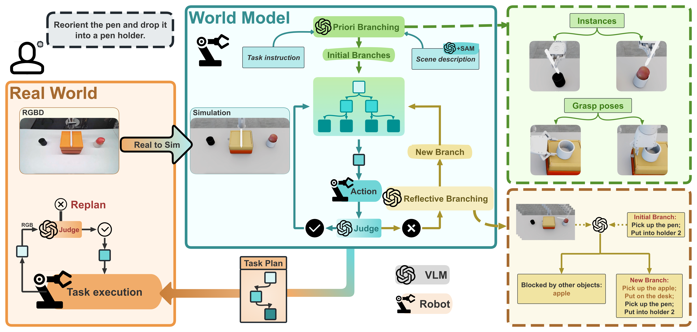

World models have emerged as a pivotal component in robot manipulation planning, enabling agents to predict future environmental states and reason about the consequences of actions before execution. While video-generation models are increasingly adopted, they often lack rigorous physical grounding, leading to hallucinations and a failure to maintain consistency in long-horizon physical constraints. To address these limitations, we propose Embodied Tree of Thoughts (EToT), a novel Real2Sim2Real planning framework that leverages a physics-based interactive digital twin as an embodied world model. EToT formulates manipulation planning as a tree search expanded through two synergistic mechanisms: (1) Priori Branching, which generates diverse candidate execution paths based on semantic and spatial analysis ; and (2) Reflective Branching which utilizes VLMs to diagnose execution failures within the simulator and iteratively refine the planning tree with corrective actions. By grounding high-level reasoning in a physics simulator, our framework ensures that generated plans adhere to rigid-body dynamics and collision constraints. We validate EToT on a suite of short- and long-horizon manipulation tasks, where it consistently outperforms baselines by effectively predicting physical dynamics and adapting to potential failures.

Given a task instruction, the system first reconstructs the real scene into an interactive 3D digital twin. It then constructs a world-model-grounded planning tree through Priori Branching and Reflective Branching. Priori Branching proposes initial candidate branches, while Reflective Branching analyzes simulated execution failures to expand the tree with revised branches. Through iterative searching and expansion of the planning tree, the system identifies a feasible plan, which is finally executed on the real robot in a closed-loop manner with visual feedback and re-planning.